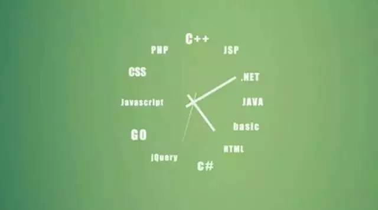

我算是靠坑蒙拐骗进了程序员的门，然后一路狂奔。26岁之前几乎没有任何写代码的经验，研究生毕业却意外选择了一家不可能提供培训的初创公司，在每日担忧公司倒闭、害怕被炒鱿鱼以及同事冷落白眼的三重压力下逆流而上，一年半后离职，已是拥有 500万用户产品的后台主程。从前我对计算机技术心怀畏惧，认定技术高人一定有佛光笼罩，昼夜不息运键如飞日吐代码上万行。现在也算见过一些世面了，回首那段忐忑不安宛如初夜的过程，我却不发觉有任何的励志意味，而是视为一种理所当然。理想的程序员，和理想的建筑师、理想的财务师、理想的按摩师没有任何的差别，他们本质上都是一群手艺人。我相信理想的程序员人人皆可成为。

近三年总在互联网圈厮混，我认识过一些程序员，共事过一些程序员，领导过一些程序员，又面试过一些程序员。他们学历不同，有的来自北大，有的来自培训机构，有的是博士，有的是高中肄业；资历也不同，有的来自BAT，有的来自某破产基金公司（还是一个销售）；年限也从 0 到 15年不等。但我认为程序员只需分三类：天才的程序员、理想的程序员、平庸的程序员。天才的程序员我只敢说接触过 3 个，这是天命。7分由你是颗精子的时候就已决定，拥有绝佳的数学天赋、冷静致密的逻辑、为解决难题宁愿不眠不休而深以为乐的技术热情；3分来自起步要早早早，恨不得同龄人玩泥巴的时候就得开始玩电脑，大学毕业前就突破一万小时法则，后面的已是游戏人生。
天才的程序员可遇不可求，更不能长有，我看到的90%仍是平庸的程序员。IT时代的膨胀，已让程序员如同文艺复兴时的印刷匠一样的普通，多数投入祖师爷门下的人，仅是为了更大的饭碗，更高的待遇，更好的生计。平庸的程序员编写腐烂的代码，没有规范和一致性，固守旧世界的语言，还好谈论大的架构和性能，说的比做的漂亮。而毫无例外的，他们认定技术没有出路，做产品、营销和管理的是更高大上的手艺，而他们当中的99%，又会自然的流露出自己恰巧具备了那方面的天赋，至于进程为什么会崩溃这样的小问题是不屑于去了解的。
而我最喜欢和理想的程序员相处，恨不得与他们同吃同住，如果允许，我希望我的队伍能插满他们的旗帜。理想的程序员心眼儿不坏（他们从来都不是办公室政治的宠儿，是一群单纯明亮快乐的手艺人），有天真烂漫的好奇心（他们的眼睛里经常闪着「哇，这个是怎么做到的！」），永远精益求精（他们的口头禅是「我再研究一下」），还乐于分享（他们活跃于GitHub、各大问答社区和你的身边，舍得将宝贵时间用于帮助新手）。是的，他们不需要被管理，只需要给一个大的方向，总能回报以意想不到的结果。
理想的程序员与平庸的程序员只有一墙之隔。两者的差距只有 6个一点点，而人与人的差距，正是在这日积月累的一点点中，被永远拉开了。有意思的是，我发现这 6个一点点都和意识有关，也就是程序员和其他一切新兴产业的工种一样，只需要意识加上时间的锤炼，人人皆可达到理想的阶段。理想的程序员必然也是一个优秀的problem-solver。
第 1 个一点点：专注眼下
见过太多心猿意马的程序员，我不得不把「专注眼下」作为天字第一条。他们往往有各式各样的小梦想，比如做个小茶农、做个小鹅贩、做产品、做销售、做投资，却被程序员的高薪或是没有转行的魄力「耽误」了，而因为不专注，他们不在意做好自己的本分，不在意锤炼自己的技能，不在意学习新兴的技术。不可否认，这世界上存在着伟大的产品（像乔老爷）、伟大的销售（像埃里森）、伟大的投资客（像彼得菲），而他们毫无例外都是程序员出身。可你听说过巴菲特评价盖茨的话么，比尔盖茨如果转行去卖狗，那他一定是全世界最大的狗贩。我坚信除了少数的天才外，冥冥众生均可以在多个领域取得成功，只要保持足够的专注。而哪怕你下一年就想卖狗去，程序员的经验仍然能训练你强大的逻辑、谨慎和耐心，放在哪个行业都是相当可观的竞争力。
第 2 个一点点：思考力与推动力
我认为处理bug、崩溃、调优、入侵等突发事件比编程本身更能体现平庸程序员与理想程序员的差距。当面对一个未知的问题时，如何定位复杂条件下的核心问题、如何抽丝剥茧地分析问题的潜在原因、如何排除干扰还原一个最小的可验证场景、如何抓住关键数据验证自己的猜测与实验，都是体现程序员思考力的最好场景。是的，在衡量理想程序员的标准上，思考力比经验更加重要。
有时候小伙伴跑过来，问我「提交了一个任务被卡住了，怎么办」的时候，我总觉得他可以做得更好。比如，可以检查试验别的任务，以排除代码自身的原因；可以通过 Web UI 检查异常（如果没有账号，可以让我提供）；可以排查主机日志或删除缓存，再不济，总应该提供任务 ID和控制台日志给我。理想的程序员永远不会等事情前进，他们会用尽一切方法让事情前进。
第 3 个一点点：Never Say No
记得从前厂离职之前，找老板谈话，他说我最大的优点就是从来不和他说这个做不到。后来我发现在很多团队里，都存在一种技术和产品的对立，程序员往往以「技术上无法实现」来挡产品的需求，而产品也往往以「Facebook可以为什么我们做不到」来奚落程序员。这两句话应该属于禁语，从根本上都不利于程序猿和产品狗的相亲相爱。
一句「技术上无法实现」是容易出口，可有多少人在说出这句话的时候，心里是100%肯定的？如果不肯定，为什么不能回去谷歌一下再回答？原本我以为程序员是充满想象力，在因为有想象力，才能诞生那么多改变我们生活的软件和互联网产品。见识多了，才了解大部分程序员已经在与bug的对抗中变得保守而不愿担当风险，与此同时许多团队也不愿意宽容失败。于是「Say No」变成一种习惯性的抵触，还记得曾国藩为什么解散湘军么？他说那支军队已「暮气渐深」，不能打仗了。要做理想的程序员，就不能给自己滋生暮气的机会，如果面对不合理的需求，可以把时间成本摆出来，把曲线救国方案亮出来，简单粗暴「Say No」是不可取的。
第 4 个一点点：投资未来
程序员是一个非常残忍的职业。你所学所用的语言、框架、模式，很可能在数年内就成昨日黄花了；你现在嘲笑的另一群程序员，可能马上就能转身来嘲笑你了。所以理想的程序员除了做好自己的本分，还要花费时间来投资未来。什么是「投资」？投资就是你现在投入的时间，在未来会以更多的时间或者金钱（看看早几年学习iOS的程序员现在的薪酬！）回报你。举我自己的领域 — 数据挖掘为例，08年左右Hadoop开始兴起，一时「大数据」概念火热，Hadoop工程师万金难求，各互联网公司纷纷把数据统计、数据分析和数据挖掘的业务切换到分布式平台上。这几年眼看 Hadoop 还在不断迭代，Spark又异军突起，一举刷新了 Hadoop 保持的排序记录，以内存存储中间数据带来的性能优势和丰富的数据结构让人爱个不停，各种奇异的小 bug和陡峭的学习曲线又让人打退堂鼓。那么，明眼人都知道 Spark 是未来的趋势（内存会越来越便宜），在主业务放在 Hadoop的条件下，就可以适当把一些小模块切换到 Spark 上，同时留意 Spark 社区的发展。很快从 Spark 获得的性能收益就能把之前投入的学习时间挣回来。
第 5 个一点点：善用工具
善用工具可以分为 4 个层面：
- 搜索引擎
- 不相信重复
- 代码片段
- 自动化
我刚入行那会，一个计算机专业却当了公务员的朋友问我，你一点都没学过编程，平时怎么写代码？我说，谷歌，于是遭到无情的耻笑，以至于我在哪里的账号都叫2shou，告诫自己是一个无耻的二手程序员。这是一个笑话，但如果现在问我，我还是要回答谷歌。程序员的成长就像膨胀的圆饼，外面是无边无际的大海，圆饼越大，与大海接触的面也越大，懂的越多，不懂的越多，而计算机科学又是一门更新换代异常迅速的学科，同时也是知识互联网化最好的学科，很难利用传统的科班式有教有学的方法，相反通过搜索引擎则很容易获取到最新的知识。
不相信重复，大师的话叫DRY原则（Dont repeat yourself），代码写多了，会有人为的直觉判断好的和烂的代码，我的标准是简洁和规范，简洁并不是美感上的标准，重复越少，给自己出错的机会也越少，后期维护的成本也越少。
如果你不幸丢了三周前的代码，也许你能凭着过人的记忆力把脑子里残余的片段复写出来，但如果丢的是三个月前的代码，恐怕就没有那么好的运气了。理想的程序员会着力找寻有效的资料保存方式，把工作里灵光闪现写下的代码、脚本、配置、 经验等短的片段保存起来，以便任何时候都能复查。
理想的程序员必须懒惰。对他们来说，重复的步骤和重复的代码一样丑陋，如果意识到一项工作有可能长期要重复，那么自动化的时间总是越早越好。
第 6 个一点点：管理时间
之所以管理时间会对程序员这个行当特别重要，是因为在完成任务时你必须像荒野里的狼一样，「独行」。没有外界约束的情况下还能稳定控制自己，保证能高效率地工作和学习，那么日积月累你肯定会变得比一般人厉害。
程序员干的是高强度的脑力活，一般每天集中4-5 个小时应对本职工作就足够了，但工作之外，一定要安排时间用于学习。除了学习，留点时间放空自己也是必要的，利用泡茶或者喝咖啡的间隙，把弥足珍贵的时间留给自己，往前想往后想，事半功倍。
说了这么多，想必有人会问，费劲心思成为一个理想的程序员，又有什么用处？会有高薪吗？不。能升职吗？也不见得。迎娶白富美呢？不如去卖狗。
稻盛和夫曾经说过一个故事，明治时期的手艺人被天皇召见，虽然都是不读书的乡下人，但一辈子兢兢业业地做一件事情，自然有一股高贵的气质。理想的程序员，应该就是循着这种高贵的气质而去的吧。
作者：Sandy
原文链接：http://mdsa.51cto.com/art/201511/496267.htm#topx

点我分享笔记